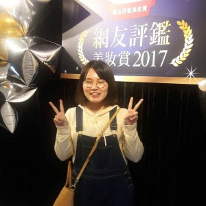

Audience Research

Yi-Chun Tsou
- Job:
- Gender: Female
- Age: 24
- Education: B.A in Art and Design
- Location: Taipei, Taiwan
- Environment: Asia, strongly influenced by Asian culture
Goal & challenges:
- Lack in confidence
- Finding excuses to avoid challenges
- Goal is to become someone who can influence others and bring up positive energy
- Become someone who knows what she wants in life meanwhile work hard to achieve them
Fear & loneliness:
- Tend to overthink
- Care too much about how other people think of her
- Tend to be emotional
- Tend to be depressed easily
- Introverted
- Tend to suppress her own emotions
- Often feel lonely
- Fear of being alone
- Fear of not having friends to talk to when she is feeling down
- Sometimes have negative thoughts